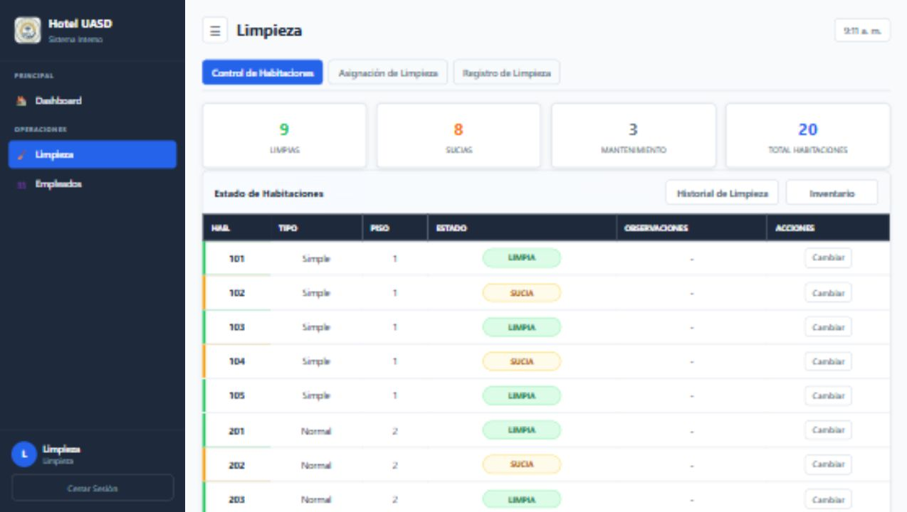

Portafolio Personal
Web personalDescripción
Lo hice para mostrar quién soy, qué estoy aprendiendo y tener un espacio donde reunir mis proyectos mientras sigo creciendo como desarrollador.
Ver proyectoDesarrollador Junior apasionado por Java y soluciones web modernas.

Soy estudiante de la Licenciatura en Informática en la UASD, con enfoque en Java y tecnologías web, y aspiro a desarrollarme como ingeniero en sistemas. Me gusta construir proyectos funcionales, aprender resolviendo problemas reales y trabajar en equipo para convertir ideas en soluciones útiles. Actualmente sigo fortaleciendo mis habilidades en programación, bases de datos y desarrollo web.
Formación impartida en Grupo Ramos SA, enfocada en atención, trato profesional y servicio al cliente.
Certificación del Politécnico México que valida mi formación técnico-profesional en el área de Mecatrónica.
Diploma de formación técnica donde fortalecí bases prácticas de tecnología, mantenimiento y resolución de problemas.
Lo hice para mostrar quién soy, qué estoy aprendiendo y tener un espacio donde reunir mis proyectos mientras sigo creciendo como desarrollador.
Ver proyecto
Proyecto final desarrollado con la participación del curso completo, organizado en grupos de tres personas. Cada grupo trabajó un módulo específico y luego se integraron las partes para construir un sistema hotelero funcional.
Ver proyecto
Este módulo de limpieza permite gestionar las habitaciones del hotel, asignar tareas al personal y actualizar el estado de cada habitación para llevar un mejor control dentro del sistema.
Ver proyecto
Proyecto desarrollado en colaboración con Wilfredi para optimizar el registro de anotaciones en partidos de softball, reemplazando el uso de hojas físicas por una solución digital más práctica.
Ver proyecto¿Tienes una propuesta o quieres saludar? ¡Usa cualquiera de estos medios!